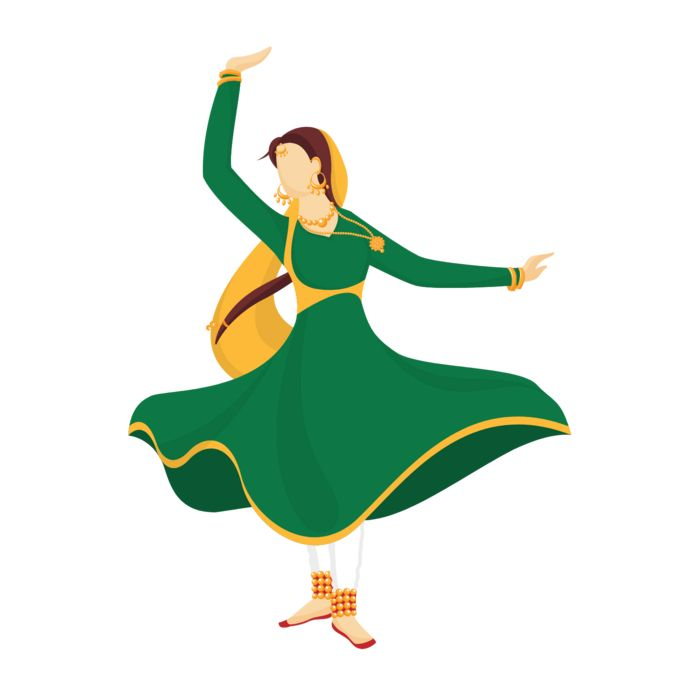
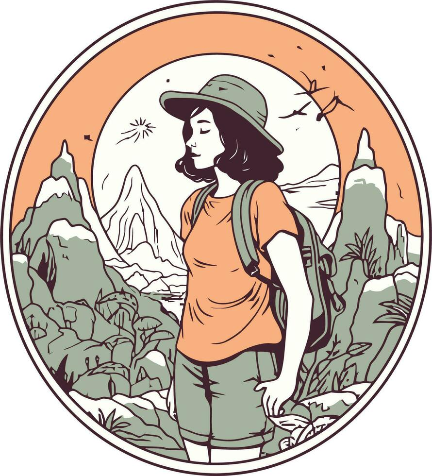

Swami Sant Dass Public School
CURIOUS • CREATIVE • ALWAYS LEARNING
I build, explore
and keep going.
I'm Sidhima — a Computer Science student exploring AI/ML, full-stack development and the creative side of technology. Check out my resume
S
Your photo goes here
Replace this area with your imageCURIOSITY
CREATIVITY
AI / ML
DESIGN
BUILD
SCROLL TO EXPLORE ↓
01
More than just
KNOW ABOUT ME
More than just
a developer.
I'm naturally curious. I like understanding how things work, experimenting with ideas and turning what I learn into something real.
I'm currently pursuing a B.Tech in Computer Science and Engineering with a specialization in Artificial Intelligence and Machine Learning. I'm working toward becoming an AI/ML Engineer or a full-stack developer with an AI specialization.
I care about both how something works and how it feels to use. For me, good technology should solve a problem and look good doing it.
01
Explorer
I love learning, experimenting and discovering what I can build next.
02
Designer
Visuals matter. A well-designed experience can make people stop and look.
03
Persistent
I believe good things take time — and I don't want to give up halfway.
“
Never give up. Good things take time.
02
What I work
TOOLKIT
What I work
with.
The tools I use today — plus the foundations I'm strengthening as I move toward AI/ML and full-stack development.
Python
CC++JavaJavaScript
HTMLCSSReact.jsNode.jsExpress.jsNext.js
MongoDBPostgreSQLGitGitHubFigmaAutoCAD
COURSEWORKDSA • Operating Systems • Computer Networks • DBMS
CURRENTLY LEARNINGDSA • Java • AI/ML
03
Learning by
MY JOURNEY
Learning by
doing.
Swami Sant Dass Public School
Current CGPA • Lovely Professional University
2022 — 2025
School → Foundation
Built a strong academic foundation at Swami Sant Dass Public School while exploring creative interests alongside academics.
X: 94.8% • XII: 86.6%2025 — PRESENT
B.Tech CSE + AI/ML
Started my Computer Science journey at Lovely Professional University, specializing in Artificial Intelligence and Machine Learning.
CGPA 9.152025 — 2026
From first builds to real projects
Started with a fun, skill-testing Tic Tac Toe project and moved into web development and problem-focused builds.
2026
FloodWatch India
A project that pushed me across design, research, coding, APIs, hosting, Git and GitHub — and taught me how much I enjoy building end-to-end.
Open project ↗NEXT
AI/ML + Full Stack
Strengthening DSA, learning AI/ML fundamentals and building smarter, more useful applications.
04
Things I've
SELECTED WORK
Things I've
built.
Hover over a project to expand it, see the deeper story and open the project directly.

012026
FLOODWATCH INDIA
Flood Monitoring & Awareness Platform
A citizen-facing platform that makes flood risk, historical events, safety guidance and emergency information easier to access.
HTMLCSSJavaScriptNetlifyGit
Designed, researched and developed the platform end-to-end, including API work, hosting and Git/GitHub workflow. The project covers 120+ cities and 500+ historical flood events across India.
Open live project ↗
022026
PANTHERACARE
Biohealth Monitoring System
A monitoring concept for organizing and presenting health-related information around Panthera pardus.
ArduinoC++Wokwi
Built a digital monitoring system that captures relevant health parameters and presents the collected information in a clear, accessible way for systematic review.
Browse project repositories ↗
032025
TIC TAC TOE
Interactive Two-Player Game
My first build — a fun way to test programming logic through turns, win conditions and player interaction.
HTMLCSSJavaScriptPython
Implemented turn-based gameplay, decision-making logic, winning and draw conditions, user input and board-state updates as a first practical programming project.
Play the Game ↗CURRENTLY LEARNING
Still becoming.
That's the point.
I don't want my portfolio to pretend I've figured everything out. I'm learning, experimenting and building my way toward AI/ML and full-stack development.
01DSAStrengthening problem-solving
02JavaOOP & programming fundamentals
03AI / MLExploring the fundamentals
04Full StackBuilding end-to-end experiences
WHAT I'M EXPLORING
Curiosity doesn't need a fixed lane.
06
The things that
BEYOND CODE
The things that
make me, me.

01
Dance
Professional classical dancer with a love for expression, rhythm and performance.
02
Music
Singing is another space where I get to be creative without a screen.
03
Calligraphy
I enjoy the visual side of creating — details, form, balance and aesthetics.

04
Travel
I've travelled across 24 states in India. New places keep feeding my curiosity.
CURRENTLY BUILDING
From learning
to making.
LEARN→EXPERIMENT→BUILD→REPEAT
The next chapter is about getting deeper into AI/ML while continuing to build polished full-stack experiences.
MY VISION
Build things that
feel meaningful.
I want to grow into an AI/ML Engineer or full-stack developer with AI specialization — someone who can understand a problem, design a thoughtful experience and actually build the technology behind it.
CURIOUS→LEARNING→BUILDING→GROWING
LET'S CONNECT
Have an idea?
Let's build it.
I'm always interested in learning, experimenting and connecting with people who are building something interesting.
Say hello ↗